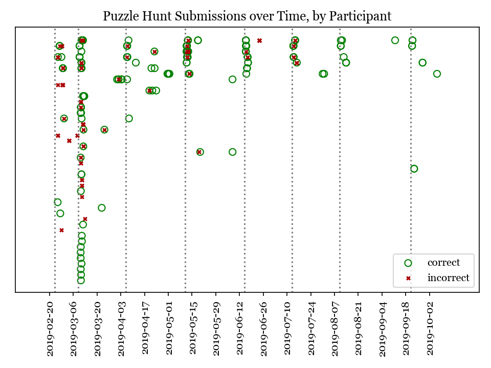

CIGMAH Puzzle Hunt 2019 Wrap-Up
Table of Contents
Usernames will be updated with names once we receive permission to publish them on this website.
Congratulations to:
| Grand Prize Winner | yingtongli |
| Challenge Prize Winner | AncoraImparo |
| Beginner Prize Winner | kevinshi |
| Abstract Prize Winner | jh |
Thank you to all participants for your participation. We hope to see you again for future puzzles.
Acknowledgements
We would like to thank Monash Young Medtech Innovators (MYMI) for providing tickets to MedHack for the April prizewinners, as well as MUMUS for providing additional financial support for our activities. We would also like to thank Prof Wright for kindly agreeing to write a puzzle for us which we hope to release separately once it is ready.
What was the Puzzle Hunt?
The Puzzle Hunt consisted of 24 puzzles relating to coding and medicine released from February to September with the aim of encouraging medical students to learn how to code. A full listing of the puzzles, source code and related materials are archived and available from https://github.com/cigmah/cgmnt.
Who was awarded a prize?
There were two types of prizes in the Puzzle Hunt: Puzzle Prizes awarded every month, and Total Prizes, awarded at the end.
Who was awarded a Puzzle Prize?
Puzzle Prizes were awarded every month to the first solver of each puzzle. Participants could only receive one puzzle prize per month, conceding any other puzzle prizes to the next solver. The first three non-meta puzzles were sample puzzles and no Puzzle Prizes were awarded. Each Puzzle Prize was worth $10.
The following Puzzle Prizes were awarded:
| Puzzle | Username | Notes |
|---|---|---|
| 01M | yingtongli | Elected donation to the St Vincent de Paul Society Victoria. |
| 05A | fragrantdoody | Unclaimed. |
| 06B | kevinshi | Elected donation to Royal Flying Doctor Service Victoria. |
| 07C | yingtongli | Elected donation to Cancer Council Victoria. |
| 08A | dshell321 | Elected donation to Very Special Kids. |
| 09B | yingtongli | Elected donation to The Smith Family. |
| 10C | kevinshi | Elected donation to the Melbourne Symphony Orchestra Education Appeal. |
| 11A | jum | Elected donation to Servants Community Housing. |
| 12B | jh | Elected donation to Beyond Blue. |
| 13C | yingtongli | Elected donation to Australia for UNHCR. |
| 14A | AncoraImparo | Elected donation to Starlight Children's Foundation. |
| 15B | yingtongli | Elected donation to headspace National Youth Mental Health Foundation. |
| 16C | jum | Redeemed as Woolworths WISH eGift Card. |
| 17A | AncoraImparo | Elected donation to the Asylum Seeker Resource Centre. |
| 18B | kevinshi | Elected donation to the Monash University Refugee Scholarship Fund via RunMelbourne. |
| 19C | yingtongli | Elected donation to UNICEF Australia. |
| 21A | jh | Redeemed as Coles eGift Card. |
| 22B | AncoraImparo | Elected donation to UNICEF Australia. |
| 23C | yingtongli | Elected donation to Australian Red Cross. |
| 23A | AncoraImparo | |
| 24B | yingtongli | Elected donation to Lifeline Australia. |
Who was awarded a Total Prize?
The top five participants at the end of the Puzzle Hunt were:
Abstract and Beginner puzzles were worth 100 points each, minus how many participants had solved it previously. Challenge puzzles were worth double points; the Meta puzzle was worth quadruple points.
| Rank | Username | Abstract | Beginner | Challenge | Meta | Total |
|---|---|---|---|---|---|---|
| 1 | yingtongli | 695 | 698 | 1194 | 400 | 2987 |
| 2 | AncoraImparo | 673 | 681 | 1176 | 396 | 2926 |
| 3 | kevinshi | 490 | 588 | 788 | 0 | 1866 |
| 4 | jh | 573 | 481 | 190 | 392 | 1636 |
| 5 | jum | 377 | 290 | 584 | 0 | 1251 |
Total Prizes were awarded at the end of the Puzzle Hunt. Participants could only be awarded one Total Prize; any other prizes were conceded to the next participant.
The Grand Prize worth $150 was awarded to yingtongli for achieving the greatest total number of points.
The Challenge Prize worth $50 was awarded to AncoraImparo for achieving the greatest number of points from Challenge puzzles.
The Beginner Prize worth $50 was awarded to kevinshi for achieving the greatest number of points from Beginner puzzles.
The Abstract Prize worth $50 was awarded to jh for achieving the greatest number of points from Abstract puzzles.
What can we do to improve?
To improve on the format and conduct of the Puzzle Hunt should it run again in the future, we have analysed some of the data from the Puzzle Hunt this year.
How many people participated?
There were 90 registrants this year. 44 registrants submitted at least one submission. In total, 275 puzzle submissions were received, an average of 11 submissions per puzzle and 6 submissions per registrant for each registrant who submitted at least one submission.
Here is a plot showing registrations by day. Dotted red lines indicate the release of a new puzzle set. Most registrations occurred soon after the release of the first non-sample puzzle set.
As the number of registrations does not necessarily reflect active participation, here is a plot of submissions over time during the Puzzle Hunt for each participant who submitted at least one submission.
Each row indicates a separate deidentified participant, ordered by number of submissions.. Correct submissions are indicated by green circles; incorrect submissions are indicated by red crosses. Grey dotted lines indicate the release of a puzzle set.

Active participation was greatest at the start of the Puzzle Hunt, particularly at the release of the first non-sample puzzle set. Participation waned over time, though a subset of participants continued over the duration of the puzzle hunt.
Where did participants come from?
Participants registered with a username and an email, and an optional first and/or last name. As a rough measure of where participants came from, the below plot shows the frequency of email domain names of registered users. 4 personal domain names were censored.
Out of respect for participants' privacy, the Puzzle Hunt database was deleted without backup after this document was made, and we no longer have participants' email addresses nor any other information from the Puzzle Hunt. This also means we can't reproduce this document nor any of its figures in the future.
Most participants registered using generic email addresses (Gmail, Hotmail, Live, Outook, Yahoo). A large portion were from Monash University, and a small portion from other educational or research institutions (University of Melbourne, University of East Anglia, Princeton University, Inserm). A small portion registered using disposable email services (SharkLasers, nwytg, Mailinator, YOPmail, 163), which we believe was a wise choice for short-term participants with privacy concerns, particularly for participants who were not from Monash.
Which puzzles were most and least popular?
Here is a plot showing puzzles and the number of unique users who submitted at least one submission for each puzzle. This can serve as a rough measure of popularity.
It is hard to measure the intrinsic popularity of each puzzle, given that we know that later puzzles were less popular by virtue of a later release date. A more sophisticated model might better be able to estimate the separate contributions of release dates and puzzle features, but was outside the scope of this wrap-up.
The two most popular puzzles were Abstract puzzles released early in the Puzzle Hunt; three of the five most unpopular puzzles were Challenge puzzles.
Which puzzles were easiest and hardest?
We can get a general sense of the "difficulty" of each puzzle by comparing how many incorrect submissions were received with how many correct submissions were received.
Assessing the difficulty of puzzles varies on how difficulty is defined, given that difficult puzzles may have either been a) unapproachable (and therefore received few submissions), or b) deceptive (and therefore received submissions more likely to be incorrect). We have chosen the second definition, given that we have described the popularity of puzzles in the section above, but "difficulty" here should be interpreted in the context of popularity as well.
Note this graph differs from the previous graph - this graph tallies total submissions including those from the same participant; the previous graph tallies only the number of participants who submitted at least one solution to each puzzle.
The puzzle with the highest ratio of incorrect to correct submissions was the Meta puzzle Lost in a Library (8 incorrect submissions for every 1 correct submission), though interestingly the puzzle with the highest absolute number of incorrect submissions was the Abstract sample puzzle, Metabolic Mayhem.
Metabolic Mayhem was cast as a sample puzzle as it consisted of the interpretation of an abstract animation, which we believed too ambiguous to be included in the main puzzle hunt (and which appears to have been a correct decision).
This puzzle depicted an abstract animation of a metabolic pathway in a normal and a pathological state. The metabolic pathway consisted of an unknown particle being carried by gradually-diminishing particles through the blood stream before being cleared by receptors from an unknown organ; in the pathological state, these particles accumulated in the bloodstream due to dysfunctional receptors. Participants were asked to determine the gene mutation involved in the pathological state.
Out of interest for this particular puzzle, here were some of the responses received:
The intended correct answer was LDLR; however, it was very interesting to see the wide array of genes people could draw parallels to in the abstract depiction. We are interested in the ways abstract modelling might similarly be able to make different pathways relatable, and while these may not be suitable as puzzles for inclusion into the Puzzle Hunt, we will look for an avenue for these to return.
All game-type puzzles were entirely client-side; we made our best efforts to obscure the answers from the client-side code (including the fact that the code was transpiled from Elm to JavaScript and minified), but these puzzles are not uncrackable. Although, as we are a coding group, we believe it just as valid to have derived the solution from the client-side code as it is from pursuing the "intended" solution path - after all, it is also interesting to think of how to use code to examine the internals of the tools we use and derive useful (but hidden) information.
A number of puzzles had no incorrect submissions, though these had a low number of submissions in total and are therefore hard to interpret. Most of these were game-type puzzles, which divulged the solution after you completed the game - and in such cases, there was no chance of submitting an incorrect solution at all unless participants guessed or attempted to derive the solution from the client-side code.
How was the Puzzle Hunt run?
In the spirit of full transparency and to better inform how future Puzzle Hunts could be run, we briefly outline our setup below.
What was the technology stack?
This was our first time doing full-stack development. While the backend and frontend "worked", the codebases are neither clean nor well-designed. On the plus-side, we have now learnt better and will not be making the same mistakes in the future.
As a summary:
| Backend | Python + Django REST Framework, hosted on Heroku |
| Database | PostgreSQL |
| Frontend | Elm, hosted on GitHub Pages |
The source code for all components of the Puzzle Hunt are available from https://github.com/cigmah/cgmnt.
The Puzzle Hunt backend and frontend were written in late January and early February using Python and Elm.
The backend used the Django REST Framework and handled all the core functionality based around database interaction (such as adding puzzles, retrieving released puzzles, handling user registrations) and application logic (such as scoring submissions, aggregating scores, time-locking excessive submissions). The backend was kept in a private GitHub repository and hosted on Heroku, connecting with a PostgreSQL database provided by an additional Heroku add-on.
The frontend was a single-page application written in Elm with custom CSS. It handled all interactions on the web interface, including navigation, rendering, and server interactions. The frontend was kept in a public GitHub repository and hosted on GitHub Pages.
We changed the Puzzle Hunt website design twice during the Puzzle Hunt as we wished to refocus the group's target audience and reduce the verbosity of puzzles by using video introductions instead. This was a mistake on our part and increased confusion over the user interface. We will not do so again.
Puzzles themselves were written in a mixture of languages; interactive puzzles were all written with Elm, whereas data analysis puzzles tended to be written in Python. When graphics were required (such as for each puzzle's Meta Puzzle room hint), they were made with either Inkscape (for simple vector graphics) or Blender (for full 3D models). Where music or sound effects were required (such as for several of the game-type puzzles), they were made with MuseScore.
How much did it cost?
There were two sources of material cost for the Puzzle Hunt: prizes and server hosting costs.
We budgeted for 25 puzzle prizes, but one Puzzle Prize was unclaimed, three puzzles were sample puzzles and the 25th puzzle was separated out from the main Puzzle Hunt (stay tuned).
| Item | Unit Cost | Total Units | Total Cost |
|---|---|---|---|
| Puzzle Prizes | $10 per prize | 20 prizes | $200 |
| Grand Prize | $150 per prize | 1 prize | $150 |
| A/B/C Total Prizes | $50 per prize | 3 prize | $150 |
| Server Hosting (Heroku - Hobby) | $7 per month | 8 months | $56 |
| Database (Heroku Postgres - Hobby Basic) | $9 per month | 8 months | $72 |
| Grand Total | $628 |
This section will be updated once the Total Prizes are confirmed.
As of : 18 of the Puzzle Prizes were donated to charities, organisations or funds of participants' choosing. $180 of the total cost has been donated so far.
What happens now?
As the main Puzzle Hunt has concluded, we have included further details on plans for CIGMAH below.
Will there be another Puzzle Hunt?
We hope so. If there is another Puzzle Hunt, we hope this wrap-up document is useful for future planning.
It is often tradition for the winner/s of a Puzzle Hunt to arrange the next Puzzle Hunt, but we know this request does not come lightly and there is no precedent for this particular Puzzle Hunt. Whether or not we are able to deliver on this tradition remains to be seen, but we hope that the Puzzle Hunt can handover its management and evolve over time.
Should the Puzzle Hunt continue, we have consolidated the following suggestions based on data from this Puzzle Hunt:
Suggestions
- Conduct the Puzzle Hunt on a single day or a single weekend. Participation was greatest at the start of the Puzzle Hunt. We maintained the Puzzle Hunt over the year as our primary intent for the Puzzle Hunt was to encourage medical students to learn how to code over time, but this did not appear to be successful; most active participants were experienced coders. A single day or weekend, possibly with a pre-Puzzle Hunt coding bootcamp, may be easier for new medical students/coders to manage with busy schedules and with less commitment required. This would also be less costly.
- Orient puzzles towards abstract, visual or gamified learning. Our puzzles ranged from abstract games requiring no actual coding, to concrete statistical or data science problems requiring a significant amount of programming knowledge. Although the latter category is arguably more "useful", the former category was far more popular. It may be useful, as far as possible, to investigate how elements of gamified learning can be used to make the data analysis-type puzzles more fun and bridge the gap between the two categories.
- Simplify the technology stack. The development of a full-stack application for the Puzzle Hunt was a good opportunity for the management team to learn, but not necessary for the Puzzle Hunt itself. The technology stack could be greatly simplified, such as using a backend server performing server-side rendering and foregoing the frontend entirely.
What else is CIGMAH doing?

CIGMAH is working on An Open Revision Tool for Assessments (AORTA) (currently hosted at https://aorta.netlify.com/), a free and open-source medical note and question bank. There's not enough content there for it to be useful yet, but most of the coding is done and we're working on adding content. We're always looking for help, so do get in touch if you are interested.
We are also looking at hosting more tutorial nights on a range of coding topics, recommencing next year. The topics we host tutorial nights on are not yet decided, but we will try to cover fun, interesting and relevant material for medical students. Suggestions for tutorial night topics are highly welcomed.
Finally, we are interested in beginning a game development project for practising medical cases, possibly in the style of interactive fiction text adventures such as Zork or Spider & Web. We were originally looking at incorporating this as part of AORTA, but it may be easier to develop as a spin-off project.
How do I contact CIGMAH?
If you have any questions, concerns, suggestions, recommendations, feedback or
would otherwise like to get in contact with CIGMAH, you can contact us via email
at cigmah.contact at gmail dot com.
We look forward to hearing from you!